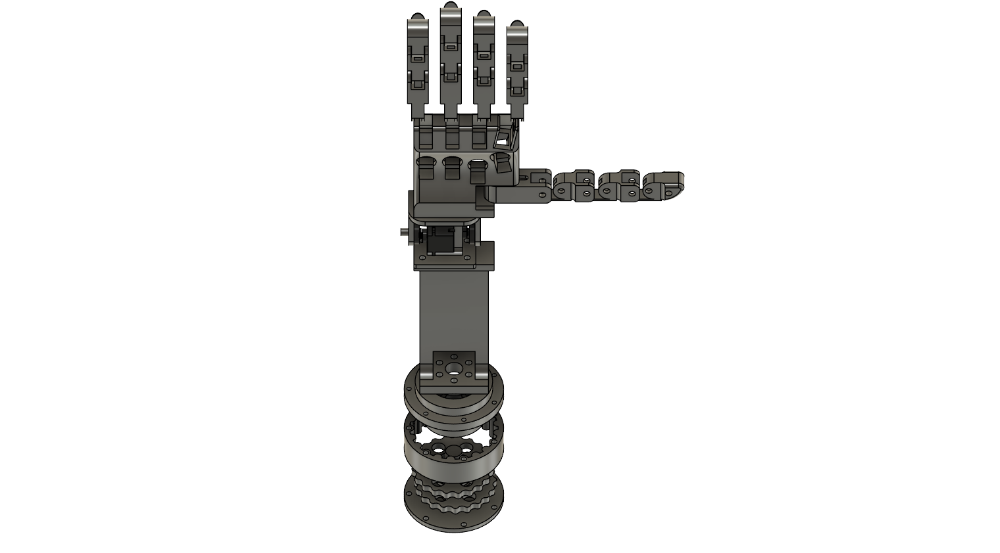
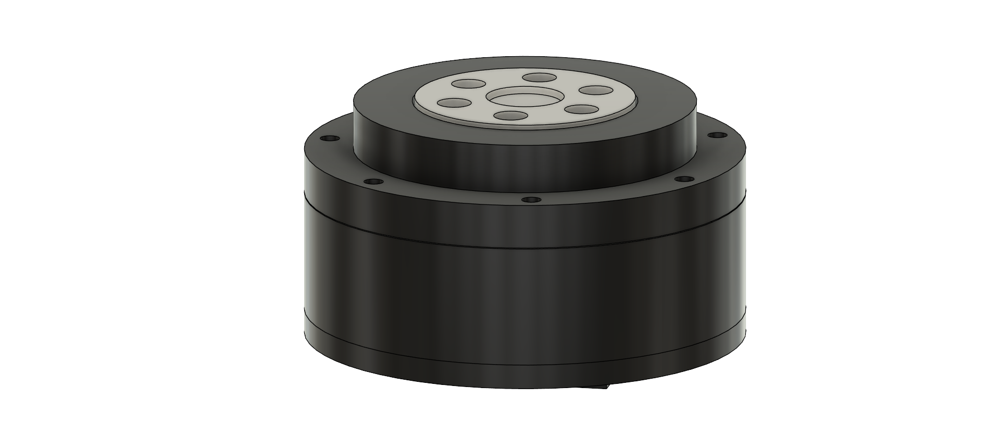
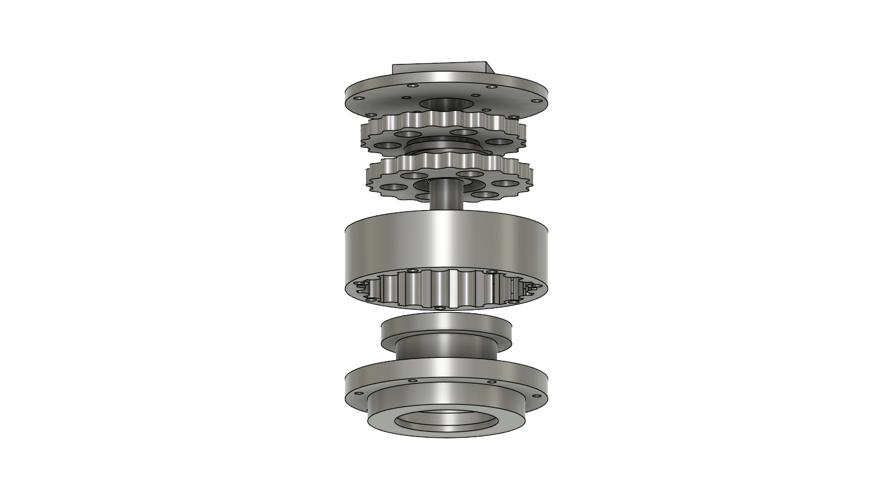
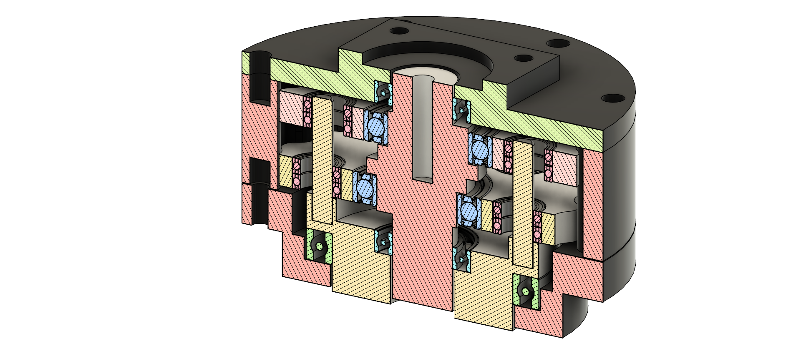
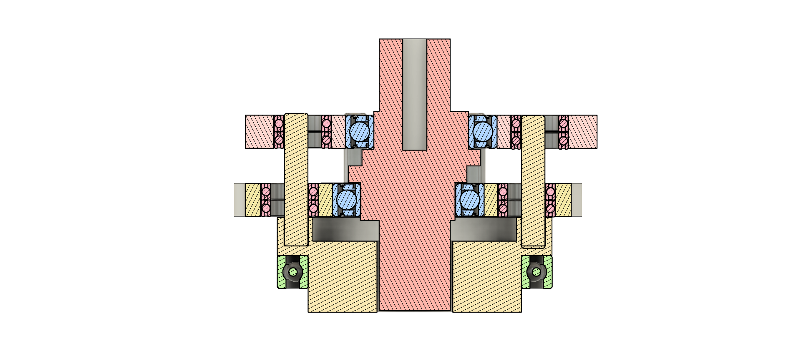
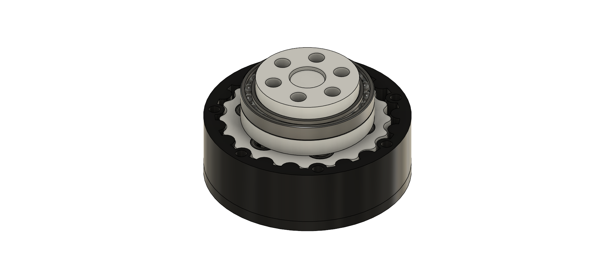
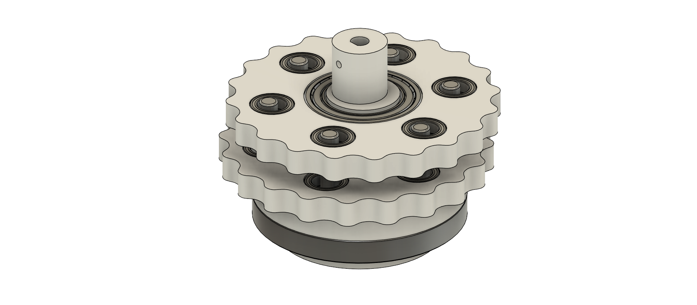

Prosthetic Hand: Design, Control, and Prototyping
A robotic/prosthetic hand system developed to explore electromechanical integration, embedded control, mechanical packaging, and custom motion transmission through a cycloidal drive architecture.

Project Summary
This project documents the design and development of a robotic/prosthetic hand system created to explore electromechanical system integration, embedded control, and iterative engineering design. The current work focuses on the palm and forearm structural assembly as well as a custom cycloidal drive intended to provide controlled rotational motion for the arm.
The project combines CAD modeling, mechanical packaging, motion system design, and prototype-oriented engineering decisions into a single system intended to demonstrate both technical ability and practical problem-solving.
Design Goals
- Create a functional robotic/prosthetic hand platform with a strong structural base.
- Develop a compact palm and forearm assembly that supports future integration of components.
- Design a rotational drive mechanism capable of controlled arm motion.
- Use CAD and rapid prototyping methods to support iterative design improvements.
- Build a project that demonstrates mechanical design, systems thinking, and engineering documentation.
Mechanical Design
The palm and forearm assembly was designed as the main structural body of the system. The CAD model shows a compact interface between the palm housing and forearm support structure, with mounting features included for future component integration. The forearm section was designed with cutout features to reduce unnecessary material while maintaining structural support and creating space for internal routing and mechanical packaging.
A key goal of this portion of the design was to create a rigid base that could support rotational motion and future actuator placement without making the overall assembly unnecessarily bulky. The geometry was also designed to keep the structure visually clean and practical for fabrication through 3D printing or other prototyping methods.


Cycloidal Drive
A custom 20:1 cycloidal drive was designed as the primary rotational transmission concept for this project. The mechanism was originally developed for the prosthetic arm system as a compact method of converting motor-driven rotary input into slower, higher-torque motion suitable for controlled joint actuation. As the design progressed, the drive also became a strong standalone mechanical subsystem with potential reuse in future robotic applications, including a modular 5-axis robot arm platform.
The cycloidal drive was modeled in Fusion 360 and developed with a focus on compact packaging, reduction capability, modular construction, and compatibility with prototype manufacturing through 3D printing. The design uses a 20:1 reduction ratio to amplify torque while keeping the mechanism relatively small and mechanically integrated.


Design Purpose
This transmission was designed to serve as a compact torque conversion mechanism for robotic joint movement. The intent was to move beyond simple structural CAD modeling and incorporate a functional motion subsystem directly into the overall project architecture. Including a custom cycloidal drive demonstrates deeper mechanical design work through transmission design, component interaction, tolerancing, packaging, and mechanical reuse across multiple project directions.
Mechanical Layout and Function
The drive uses cycloidal motion principles to achieve high reduction in a relatively compact form. The internal arrangement includes the cycloidal disks, eccentric input motion, bearing support features, and an output interface designed to transfer the reduced motion to the next stage of the mechanical system. This architecture was chosen because it offers a strong balance between size, reduction ratio, and mechanical interest for prototyping and portfolio development.



Engineering Considerations
- 20:1 reduction ratio selected to provide meaningful speed reduction and torque amplification.
- Designed around compact packaging for robotic joint integration.
- Modeled for manufacturability through 3D printing and standard hardware integration.
- Developed with attention to bearing placement, shaft support, and component stack-up.
- Intended to support future motion system testing and robotic reuse.
Performance Direction
The cycloidal drive was intended to be driven by a NEMA 17 stepper motor as the input actuator. Based on a 20:1 reduction ratio and an estimated transmission efficiency of 35 percent, the design targets substantially increased output torque relative to direct motor drive. Using a NEMA 17 stepper motor with a holding torque of 45 N·cm (0.45 N·m), the estimated output torque is approximately 3.15 N·m under the assumed efficiency condition.
Project Value
This part of the project reflects mechanical design beyond basic part modeling by showing how a custom transmission can be integrated into a larger electromechanical system. It demonstrates CAD development, iterative engineering, internal mechanism packaging, and the ability to build reusable subsystems that can transition from one application to another. While the drive was first developed for a prosthetic arm concept, it now also supports the direction of a future modular 5-axis robot arm project.

Control and Prototyping Direction
The next stage of the project will focus on improving the realism, compactness, and mechanical performance of the prosthetic hand system. One major planned addition is a vertical wrist joint that will allow the hand to move up and down in a way that more closely resembles natural wrist motion. This joint is intended to be driven by a high-torque servo so that the wrist can provide controlled angular motion while still supporting the weight and loading of the hand assembly.
Another planned improvement is the design of a forearm cover that can be 3D printed and integrated into the current structure. In addition to improving the overall appearance of the system, this cover will help package the components more cleanly and support the goal of slimming down the forearm from the original design.
The long-term control direction is expected to move beyond cable-driven finger actuation using servos and toward linear actuators combined with mechanical linkages. This change is intended to improve grip strength, provide more precise finger positioning, and create a more robust approach for controlled grasping.
Testing and Iteration Strategy
This project has evolved through iterative CAD development, physical prototyping, and hardware experimentation rather than being treated as a single fixed design. The current work has focused on developing the palm and forearm structure, evaluating motion concepts such as the cycloidal drive, and creating a foundation for future improvements in wrist motion, finger actuation, and overall system packaging.
- Fit and alignment of structural components
- Smoothness of rotational motion
- Assembly tolerances for the cycloidal drive
- Packaging of actuators, bearings, and hardware
Skills Demonstrated
This project demonstrates skills in CAD modeling, mechanical system design, packaging of structural components, motion mechanism development, and iterative design refinement. It also reflects the ability to think through how individual subsystems fit together in a larger robotic/prosthetic assembly.
In addition to the mechanical design work, this project has strengthened experience with the ESP32 microcontroller through programming in C/C++ to support system control and hardware testing. It has also required the development of wiring diagrams and circuit planning to build working electrical setups for the prototype.
Another major part of the project has been building a complete working system from scratch to drive a NEMA 17 stepper motor as the actuator for the cycloidal drive. This work has involved hardware integration, motor control, circuit implementation, and the coordination of mechanical and electrical subsystems into a functioning prototype platform.
Core Tools and Methods
- Fusion 360 / CAD Modeling
- 3D Printing and Prototype Fabrication
- ESP32 Microcontroller
- C/C++ Embedded Programming
- NEMA 17 Stepper Integration
- Circuit Planning and Wiring Diagrams
- Mechanical Packaging
- Iterative Engineering Development
Future Improvements
Future improvements to the project will focus on making the prosthetic hand more realistic in motion, more compact in overall form, and more capable in controlled grasping. This includes the addition of a vertical wrist joint, a slimmer 3D-printed forearm cover, and a longer-term transition from cable-driven finger control to linear actuators combined with mechanical linkages.
Conclusion
This project represents an ongoing effort to design a robotic/prosthetic hand system that combines structural design, controllable motion, and prototype-ready engineering decisions. The current work shows progress in both the overall arm architecture and the custom rotational drive concept, and it provides a strong foundation for future development in control, electronics integration, and physical prototyping.